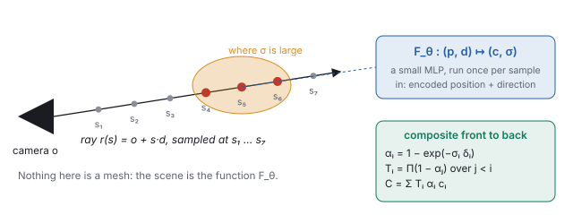
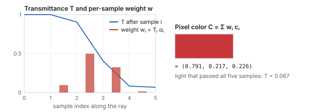
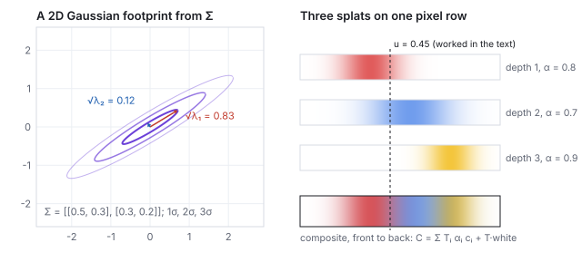
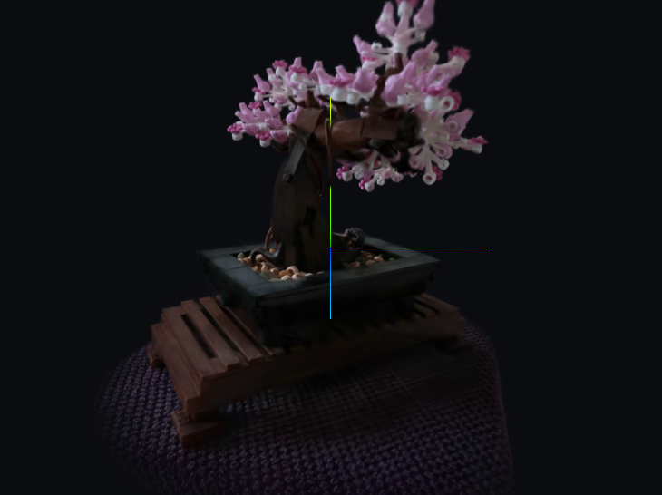

This chapter links to the course’s interactive demos and to original
papers on the open web, and it uses MathJax for its formulas. Read it
through the course website (or download the file and open it in a
browser); a Canvas inline preview will reach neither the demos nor the
math. All chapters.
Learned Scenes
CSS 551 · Advanced 3D Computer Graphics · course text
Course text · one scene learned from its own photographs: NeRF and 3D Gaussian splatting. Assigned by your offering’s course site; pairs with the live splat exhibit.
Rather than learn the distribution of all images, a learned scene learns one place from its photographs and renders it from viewpoints the camera never saw. This chapter states the neural radiance field and its volume-rendering integral, runs that integral by hand along one ray, explains why Gaussian splatting replaced the network with explicit primitives and got real-time rates, projects and blends a few splats by hand, and sets both against diffusion models, which they meet in score distillation and ControlNet.
The other half of the neural era learns one scene from its own
photographs and renders it from viewpoints the camera never saw. A
neural radiance field
(NeRF, Mildenhall et al. 2020)
represents the scene as a function, a small network
\(F_\theta : (\mathbf{p}, \mathbf{d}) \mapsto (\mathbf{c}, \sigma)\)
from a 3D point and a viewing direction to a color and a
density, with no mesh anywhere. Density is how much a ray
passing through \(\mathbf{p}\) is attenuated per unit length: zero in
empty air, large inside a leaf. This is the function view of
the image-space chapter applied to a volume rather than a
picture plane, and the network is exactly the approximator of
the networks chapter: eight layers of 256 units, a few hundred
thousand weights, one scene per network.

One pixel of a NeRF render. The ray from the camera through the pixel is sampled at points \(s_1 \dots s_7\); the network is evaluated at each, returning a color and a density; the results are composited front to back with the formulas at the right. The density is large only inside the object, so only the red samples contribute.
One detail makes the function view work in practice. Fed raw
coordinates, a small network produces blurry fields, because a
perceptron is biased toward smooth functions and a scene has sharp
edges. NeRF first maps each coordinate through fixed sines and cosines
of increasing frequency,
and feeds the network \(\gamma\) of every coordinate instead. This is
the cosine basis of the image-space chapter again: the network now
combines basis functions of many frequencies and can be sharp.
Worked example (positional encoding of one coordinate)
With \(L = 4\) and \(p = 0.3\):
\(k\)
frequency \(2^k\)
\(\sin(2^k \pi p)\)
\(\cos(2^k \pi p)\)
0
1
0.809
0.588
1
2
0.951
−0.309
2
4
−0.588
−0.809
3
8
0.951
0.309
One number became eight, and two points that differ by \(0.01\) now
differ by a lot in the high-frequency entries (\(\cos(8\pi\cdot0.31) = 0.063\)
against \(\cos(8\pi\cdot0.30) = 0.309\)), which is what lets the network
place an edge between them. NeRF uses \(L = 10\) for position (60 numbers for
\(\mathbf{p}\)) and \(L = 4\) for direction.
2 · Rendering a field: the volume integral
A pixel is made by marching a camera ray
\(\mathbf{r}(s) = \mathbf{o} + s\,\mathbf{d}\) through the field and
compositing front to back:
Definition (volume rendering)
\[
C(\mathbf{r}) \;=\; \int_{s_n}^{s_f} T(s)\, \sigma(\mathbf{r}(s))\, \mathbf{c}(\mathbf{r}(s), \mathbf{d})\, ds,
\qquad T(s) = \exp\!\Big(-\int_{s_n}^{s} \sigma(\mathbf{r}(u))\, du\Big),
\]
where \(T(s)\) is the transmittance: the fraction of the ray
that survives to depth \(s\) without being absorbed. In practice the
ray is sampled at points \(s_1 < \dots < s_N\) with spacings
\(\delta_i\), and the integral becomes a sum:
\[
\alpha_i = 1 - e^{-\sigma_i \delta_i}, \qquad
T_i = \prod_{j < i} (1 - \alpha_j), \qquad
C = \sum_i T_i\, \alpha_i\, \mathbf{c}_i .
\]
The discrete form is the alpha compositing of the texturing lecture,
run front to back: \(\alpha_i\) is the opacity of the \(i\)-th slab,
\(T_i\) is how much of the ray is still unblocked when it reaches the
slab, and \(T_i \alpha_i\) is the slab’s weight in the final color.
The weights sum to \(1 - T_{N+1}\); whatever is left is the background.
Worked example (one ray, five samples, unrolled)
Spacing \(\delta = 0.2\) everywhere. The network returned:
\(i\)
\(\sigma_i\)
\(\mathbf{c}_i\)
\(\alpha_i = 1 - e^{-0.2\sigma_i}\)
\(T_i\)
\(w_i = T_i\alpha_i\)
1
0
(air)
\(1 - e^{0} = 0\)
1
0
2
0.5
gray (0.5, 0.5, 0.5)
\(1 - e^{-0.1} = 0.095\)
1
0.095
3
4
red (0.9, 0.2, 0.2)
\(1 - e^{-0.8} = 0.551\)
\(1\times0.905 = 0.905\)
0.498
4
8
red (0.9, 0.2, 0.2)
\(1 - e^{-1.6} = 0.798\)
\(0.905\times0.449 = 0.407\)
0.325
5
1
blue (0.2, 0.3, 0.9)
\(1 - e^{-0.2} = 0.181\)
\(0.407\times0.202 = 0.082\)
0.015
\(C = 0.095\,(0.5,0.5,0.5) + 0.498\,(0.9,0.2,0.2) + 0.325\,(0.9,0.2,0.2) + 0.015\,(0.2,0.3,0.9) = (0.791,\; 0.217,\; 0.226)\),
a red, and \(T_6 = 0.082\times0.819 = 0.067\) of the ray reaches the
background. The blue sample behind the red ones barely counts (weight
0.015) because the red slabs absorbed 93 % of the ray before it got
there: occlusion, with no depth buffer and no sorting of surfaces, just
a product of transmittances.

The example as a picture. Transmittance (blue) is the fraction of the ray still alive after each sample; the weights (red bars) are what each sample contributes to the pixel. The two dense red samples take 82 % of the weight between them.
3 · Training through the renderer
Every operation above is differentiable: the exponentials, the
products, the sum, and the network itself. So the whole march is a
function from the weights \(\theta\) to a pixel color, and training is
the march run backwards: gradient descent on \(\theta\) until rendered
rays match the training photographs,
The camera poses of the photographs are known (recovered beforehand by
structure from motion, the capture era of the history chapter),
so each pixel of each photograph defines a ray with a known answer.
Nothing tells the network where the surfaces are; it discovers that
putting density there makes many rays from many viewpoints agree with
their photographs, and that is the only way to make them agree. It is
slow: hundreds of network evaluations per ray, millions of rays, hours
per scene to train and seconds per frame to render.
4 · 3D Gaussian splatting
3D Gaussian splatting
(Kerbl et al. 2023)
keeps the learn-from-photos idea and replaces the network with millions
of explicit primitives: anisotropic Gaussians, each with a position
\(\boldsymbol\mu\), a \(3\times3\) covariance \(\Sigma\) (its size and
orientation), an opacity, and a view-dependent color. Rendering
projects each Gaussian onto the screen, where it becomes a 2D
Gaussian with covariance \(\Sigma' = J W \Sigma W^\top J^\top\)
(\(W\) the view rotation, \(J\) the Jacobian of the projection), sorts
by depth, and blends front to back with the same
\(C = \sum_i T_i\alpha_i\mathbf{c}_i\) as above, with \(\alpha_i\) now
the Gaussian’s opacity times its falloff at the pixel. That is a
rasterizer, so it runs in real time, and it needs the course’s
view and projection matrices to do it.

Left: a projected splat is an ellipse whose axes are the eigenvectors of \(\Sigma'\) and whose radii are the square roots of its eigenvalues (worked below). Right: three splats seen along one row of pixels, front to back, and their composite. The composite is the same front-to-back formula as the NeRF march with three samples per pixel instead of hundreds.
Worked example (the footprint of one splat)
A splat projects to the screen with covariance
\(\Sigma' = \begin{pmatrix} 0.5 & 0.3 \\ 0.3 & 0.2 \end{pmatrix}\)
(pixel units squared). Trace \(0.7\), determinant \(0.10 - 0.09 = 0.01\);
the eigenvalues solve \(\lambda^2 - 0.7\lambda + 0.01 = 0\):
\(\lambda = 0.35 \pm \sqrt{0.1225 - 0.01} = 0.35 \pm 0.335\), so
\(\lambda_1 = 0.685\), \(\lambda_2 = 0.015\). The ellipse’s radii
are \(\sqrt{\lambda_1} = 0.83\) and \(\sqrt{\lambda_2} = 0.12\), a
7-to-1 sliver, tilted by
\(\tfrac12\arctan\big(2\cdot0.3/(0.5 - 0.2)\big) = 31.7^\circ\). The
rasterizer touches only pixels within about three radii, so this splat
costs a few pixels; a splat facing the camera edge-on costs even fewer.
Worked example (three splats on one pixel)
Along the row in the figure, at \(u = 0.45\), the three splats (front
to back) have opacities \(0.8, 0.7, 0.9\), centers \(0.35, 0.55, 0.75\)
and widths \(0.10, 0.14, 0.08\). Each contributes
\(\alpha_i = \text{opacity}_i \cdot \exp\!\big(-(u - \mu_i)^2/2\sigma_i^2\big)\):
splat
falloff at \(u\)
\(\alpha_i\)
\(T_i\)
\(w_i\)
color
1 (red, front)
\(e^{-0.5} = 0.607\)
0.485
1
0.485
(0.85, 0.2, 0.2)
2 (blue)
\(e^{-0.255} = 0.775\)
0.542
0.515
0.279
(0.2, 0.45, 0.9)
3 (yellow, back)
\(e^{-7.03} = 0.001\)
0.001
0.236
0.000
(0.95, 0.75, 0.15)
\(C = 0.485\,(0.85,0.2,0.2) + 0.279\,(0.2,0.45,0.9) + 0.000\,(\dots) = (0.469,\; 0.223,\; 0.348)\),
and \(T = 0.235\) of the pixel still shows the background (white in
the figure, giving the drawn color \((0.70, 0.46, 0.58)\), a muted
purple). The yellow splat is at this pixel invisible not because it is
occluded (24 % of the ray reaches it) but because its own footprint
does not extend here; one row over it dominates.
Training is unchanged in spirit: the rasterizer is differentiable with
respect to every Gaussian’s parameters, so gradient descent moves,
stretches, recolors, splits and prunes the Gaussians until the renders
match the photographs. Minutes to train, hundreds of frames per second
to render, and the scene is a list of primitives an engine can hold
beside its meshes.

The “bonsai” capture of the Mip-NeRF 360 dataset (Barron et al. 2022), reconstructed as about 240,000 Gaussians by an independent training run and rendered live by the course’s splat demo, screenshotted headless. Every leaf is a few dozen overlapping ellipses; there is no mesh, no texture, and no light source, only colors that vary with the viewing direction as the photographs did. The small three-colored cross is the demo’s own marker at the camera’s look-at point, not part of the scene. Attribution in media/gsplat/ATTRIBUTION.md.
See it liveA real splat scene:
the same bonsai, about 240,000 Gaussians rendered live in the browser;
fly around it and change the field of view.
5 · Learned scenes against learned images
Learned scene (NeRF, 3DGS)
Learned image (diffusion)
one scene, from its own photos
all images, from an archive
a camera you can move
no camera, no scene
renders new views of the same thing
samples new things
trained through a differentiable renderer (your \(V\) and \(P\) inside it)
trained by predicting noise; renders nothing itself
a function of 3D position (a field)
a function of a noisy image (a denoiser)
meets diffusion in score distillation
meets the pipeline in ControlNet on your depth buffer
The two meet in the middle. Score distillation (DreamFusion) trains a
field so that its renders please a diffusion model: the renderer of
this chapter supplies the gradient path from a pixel back to the scene,
and the denoiser of the diffusion chapter supplies the
direction. ControlNet runs the other way: a depth buffer, which a NeRF
or a splat scene or an ordinary mesh renderer produces for free, fixes
the layout of a diffusion sample. In both, the graphics pipeline
provides what the generative model lacks: a scene, a camera, and a
place where geometry is a number you control.
Exercise 1 (weights sum to one)
Show that in the discrete volume formula
\(\sum_i T_i\alpha_i = 1 - T_{N+1}\), and check it on the five-sample
example.
Solution
\(T_i \alpha_i = T_i - T_i(1-\alpha_i) = T_i - T_{i+1}\), so the sum
telescopes to \(T_1 - T_{N+1} = 1 - T_{N+1}\). In the example
\(0 + 0.095 + 0.498 + 0.325 + 0.015 = 0.933 = 1 - 0.067\).
Exercise 2 (a thinner slab)
Halve the spacing to \(\delta = 0.1\) but keep the same five densities.
What happens to \(\alpha_3\) and to the final transmittance, and why is
that the right behavior?
Solution
\(\alpha_3 = 1 - e^{-0.4} = 0.330\) (was 0.551); every \(\alpha\) falls,
and \(T_6 = e^{-0.1(0 + 0.5 + 4 + 8 + 1)} = e^{-1.35} = 0.259\) (was
0.067). The ray now traverses half as much material, so more of it
survives. Density is per unit length; halving the length halves the
absorption exponent, which is exactly what \(\alpha = 1 - e^{-\sigma\delta}\)
encodes. A formula with \(\alpha_i = \sigma_i\) would not have this
property.
Exercise 3 (a round splat)
What covariance gives a circular footprint of radius 2 pixels, and what
does the \(2\times2\) covariance of a splat seen exactly edge-on look
like?
Solution
\(\Sigma' = \begin{pmatrix} 4 & 0 \\ 0 & 4 \end{pmatrix}\): equal
eigenvalues, radii \(\sqrt4 = 2\), no preferred direction. A splat
seen edge-on has one eigenvalue near zero, for example
\(\begin{pmatrix} 4 & 0 \\ 0 & 0.01 \end{pmatrix}\) after rotation: a
line 2 pixels long and a tenth of a pixel wide. Splats that thin are
what let a Gaussian scene represent a sharp edge or a leaf.
Exercise 4 (what each can and cannot do)
You have a splat scene of a room and a diffusion model. Which one do you
use to (a) render the room from the doorway, (b) put a different
painting on its wall in one still image, (c) make a video walking
through it with a painting changed? Say what breaks in (c).
Solution
(a) The splat scene: it has a camera. (b) The diffusion model, with
the splat render as a depth or edge condition (ControlNet) and a mask
on the painting: it has appearance. (c) Neither alone: the splat
scene cannot change the painting, and the diffusion model has no
scene, so a painting changed frame by frame flickers, because nothing
ties frame sixty’s painting to frame one’s. Editing the
splat scene itself (repainting the Gaussians on the wall) is the
current research answer, and it is a graphics problem.